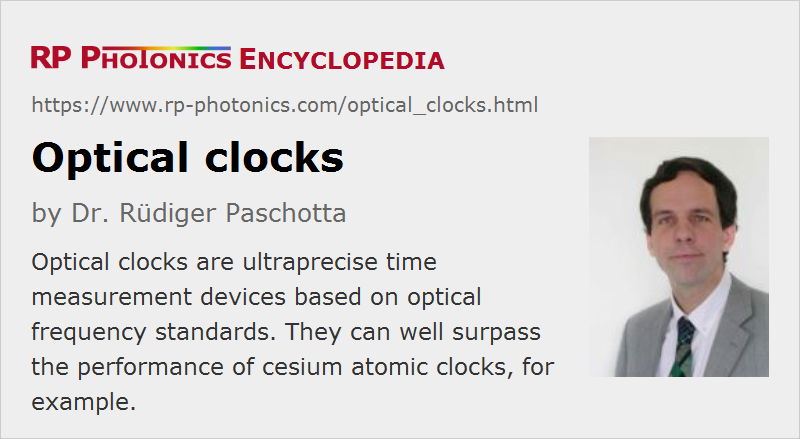

Optical Clocks
Definition: time measurement devices based on optical frequency standards
German: optische Uhren
Categories: photonic devices, optical metrology
How to cite the article; suggest additional literature
Author: Dr. Rüdiger Paschotta
An optical clock is a clock the output of which is derived from an optical frequency standard. As explained in the article on optical frequency standards, such a reference is based on atoms or ions which are kept in an optical trap and subject to laser cooling in order to suppress Doppler broadening. Their transition frequency is probed with a frequency-stabilized laser and related to lower (microwave) frequencies via an optical clockwork. An optical clock can offer an extremely high frequency precision and stability, exceeding the performance of the best cesium atomic clocks.
In the early years of optical clocks, a severe challenge was to relate the stable optical frequency to a microwave frequency standard such as a cesium atomic clock: the required optical clockworks, at that time realized as frequency chains, were very difficult to make, and were applicable only to certain isolated optical frequencies. Recently, however, very much simpler and much more versatile while equally precise optical clockworks have been realized on the basis of frequency combs from femtosecond mode-locked lasers.

Optical clocks are of interest not only for measuring optical frequencies, but also for general timekeeping where ultimate precision is required. Compared with microwave standards such as cesium atomic clocks, they have the following key advantages:
- There are certain atoms and ions with extremely well-defined clock transitions (forbidden transitions) which promise higher accuracy and stability than the best microwave atomic clocks. The anticipated (but not yet demonstrated) relative frequency uncertainty of atomic optical clocks using electronic transitions is of the order of 10−18 for long enough averaging times (possibly a few days). It may even become possible to use certain low-energy nuclear transitions in order to get to 10−19 level [10].
- The high optical frequencies themselves are of high importance because these allow precise clock comparisons within much shorter times. For example, a 10−15 precision can be achieved in a few seconds if the compared frequencies are in the optical range (hundreds of terahertz), whereas the order of a full day would be required with microwave clocks.
- Optical signals can be easily transported over long distances using optical fibers. It is even possible to obtain a very precise time comparison between different clocks at different positions, using optical-frequency transfer over fiber-optic links [11]. Compared with fibers, microwave cables are more expensive and have much higher losses, and are therefore technically much more limited.
Therefore, it is to be expected that in the not too far future the cesium clock as the fundamental timing reference will be replaced with an optical clock, although it is so far not clear which type of optical clock would be used as such a standard. A lattice clock [7] appears to be a good candidate, but the best choice of a particular clock atom is not obvious. The definition of the second will then be changed to refer to an optical frequency, rather than to a microwave frequency. However, even after that profound change, cesium clocks (and other non-optical atomic clocks, such as rubidium clocks) will continue to play an important role in technological applications as they can be simpler and more compact than optical clocks.
Suppliers
The RP Photonics Buyer's Guide contains 3 suppliers for optical clocks. Among them:
Questions and Comments from Users
Here you can submit questions and comments. As far as they get accepted by the author, they will appear above this paragraph together with the author’s answer. The author will decide on acceptance based on certain criteria. Essentially, the issue must be of sufficiently broad interest.
Please do not enter personal data here; we would otherwise delete it soon. (See also our privacy declaration.) If you wish to receive personal feedback or consultancy from the author, please contact him e.g. via e-mail.
By submitting the information, you give your consent to the potential publication of your inputs on our website according to our rules. (If you later retract your consent, we will delete those inputs.) As your inputs are first reviewed by the author, they may be published with some delay.
Bibliography
| [1] | N. V. Goldovskaya et al., “Possibility of establishment of a quantum frequency standard for the visible range using an intercombination spectral transition in the ytterbium atom”, Sov. J. Quantum Electron. 12 (12), 1659 (1982), doi:10.1070/QE1982v012n12ABEH006318 |
| [2] | S. A. Diddams et al., “An optical clock based on a single trapped 199Hg+ ion”, Science 293, 825 (2001), doi:10.1126/science.1061171 |
| [3] | R. Holzwarth et al., “Optical clockworks and the measurement of laser frequencies with a mode-locked frequency comb”, IEEE J. Quantum Electron. 37 (12), 1493 (2001), doi:10.1109/3.970894 |
| [4] | T. Udem et al., “Optical frequency metrology”, Nature 416, 233 (2002), doi:10.1038/416233a |
| [5] | L.-S. Ma et al., “Optical frequency synthesis and comparison with uncertainty at the 10−19 level”, Science 303, 1843 (2004), doi:10.1126/science.1095092 |
| [6] | S. A. Diddams et al., “Standards of time and frequency at the outset of the 21st century”, Science 306, 1318 (2004), doi:10.1126/science.1102330 |
| [7] | M. Takamoto et al., “An optical lattice clock”, Nature 435, 321 (2005), doi:10.1038/nature03541 |
| [8] | A. D. Ludlow et al., “Sr lattice clock at 1 × 10−16 fractional uncertainty by remote optical evaluation with a Ca clock”, Science Express Feb. 14, 2008, doi:10.1126/science.1153341 |
| [9] | C. W. Chou et al., “Frequency comparison of two high-accuracy Al+ optical clocks”, Phys. Rev. Lett. 104 (7), 070802 (2010), doi:10.1103/PhysRevLett.104.070802 |
| [10] | C. J. Campbell et al., “Single-ion nuclear clock for metrology at the 19th decimal place”, Phys. Rev. Lett. 108 (12), 120802 (2012), doi:10.1103/PhysRevLett.108.120802 |
| [11] | S. Droste et al., “Optical-frequency transfer over a singe-span 1840 km fiber link”, Phys. Rev. Lett. 111 (11), 110801 (2013), doi:10.1103/PhysRevLett.111.110801 |
| [12] | B. J. Bloom et al., “A new generation of atomic clocks: accuracy and stability at the 10−18 level”, http://arxiv.org/abs/1309.1137 (2013) |
| [13] | A. D. Ludlow et al., “Optical atomic clocks”, arXiv:1407.3493v2 |
| [14] | F. Riehle, “Optical clock networks”, Nature Photon. 11, 25 (2017), doi:10.1038/nphoton.2016.235 |
| [15] | W. F. McGrew et al., “Towards the optical second: verifying optical clocks at the SI limit”, Optica 6 (4), 448 (2019), doi:10.1364/OPTICA.6.000448 |
See also: optical frequency, optical frequency standards, optical clockworks, frequency combs, frequency metrology, stabilization of lasers
and other articles in the categories photonic devices, optical metrology
|  |
If you like this page, please share the link with your friends and colleagues, e.g. via social media:
These sharing buttons are implemented in a privacy-friendly way!